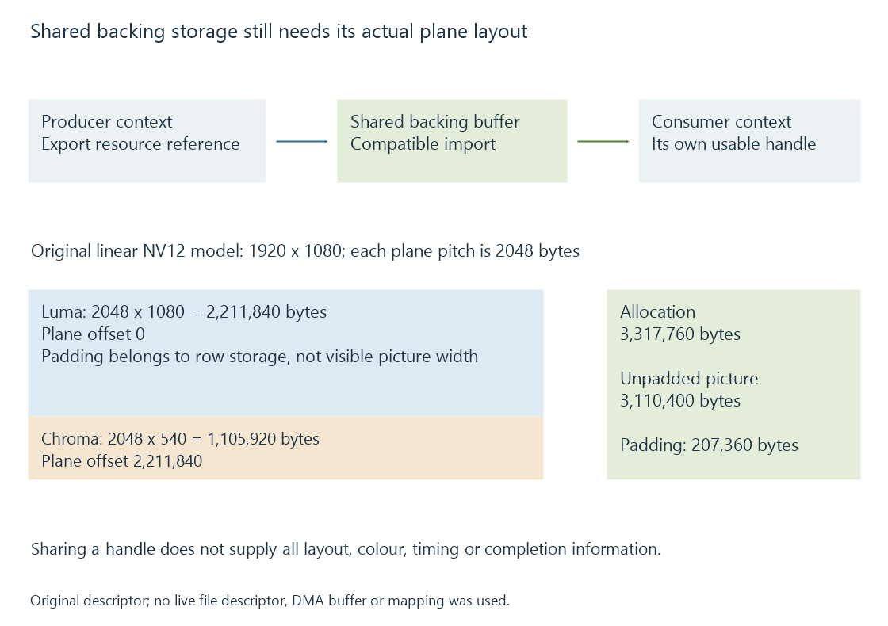
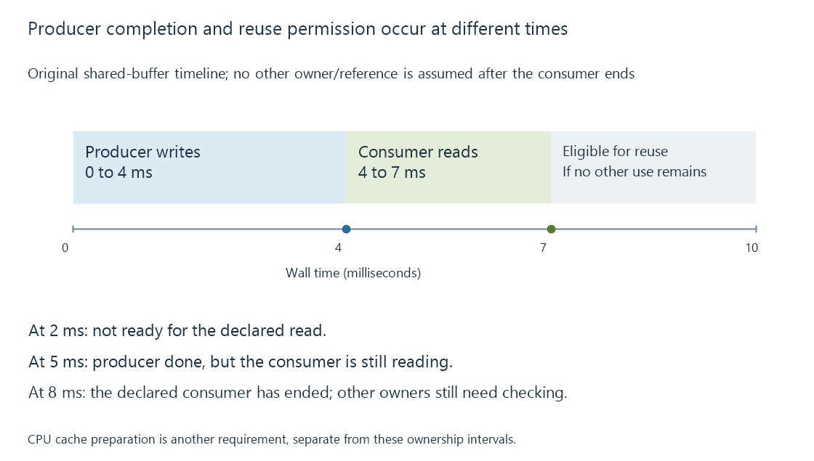

DRM PRIME and DMA-BUF frame sharing
DRM PRIME and DMA-BUF let compatible Linux subsystems exchange references to frame storage while layout, synchronization and ownership determine how the shared picture may be used.
DMA-BUF lets compatible Linux subsystems exchange references to allocated buffer storage. DRM PRIME provides related sharing interfaces in the Direct Rendering Manager.
Here DRM means the graphics subsystem, not digital-rights-managed media. The sharing mechanism concerns memory resources, while protected-playback licensing is another subject.
Share a resource reference with a compatible consumer
A producer can export a buffer through the supported mechanism. A consumer can import a reference to that storage through its compatible interface.

The process exchanges a resource handle, not a complete self-describing movie. The consumer still needs the picture's layout and the context in which those bytes should be interpreted.
For example, a decoder can produce suitable storage that another processor or encoder imports. Their accepted formats, layout modifiers and device relationships determine whether this handoff is usable.
Plane geometry is part of the picture
Consider an original 1920 × 1080, 8-bit NV12 layout. Its luma and interleaved chroma rows each have a declared 2048-byte pitch:
{
"format": "NV12",
"width": 1920,
"height": 1080,
"layout": "LINEAR",
"bufferLabel": "model-buffer-A",
"allocationBytes": 3317760,
"planes": [
{ "objectIndex": 0, "offset": 0, "pitch": 2048 },
{ "objectIndex": 0, "offset": 2211840, "pitch": 2048 }
]
}
This is a teaching descriptor, not a native DRM struct or valid exported file descriptor.
The luma occupies 1080 rows and the chroma occupies 540:
Luma bytes = 2048 × 1080 = 2,211,840
Chroma bytes = 2048 × 540 = 1,105,920
Total = 3,317,760
The chroma plane begins after the declared luma storage. Its paired chroma values cover the half-resolution chroma geometry while its row pitch remains the declared byte stride.
An unpadded layout would have 3,110,400 bytes. The modeled padding adds 207,360 bytes, about 6.667%. Assuming width equals pitch would give the wrong row addressing and chroma offset.
A real import also needs the actual supported format/modifier relationship. A tiled or compressed layout cannot be interpreted as this linear example just because its visible dimensions match.
Handles have a process context
A file descriptor is a handle in the process that owns it. Sending its printed integer as ordinary metadata does not transfer another process's usable reference.
Through an appropriate supported handle-transfer path, another process can receive its own descriptor referring to the same underlying resource. The two integer values can differ while the backing storage relationship is shared.
Likewise, a DRM-local handle and an exported DMA-BUF descriptor have different scopes. The relevant export/import operation establishes the relationship.
The illustrative buffer label above avoids pretending that a particular integer descriptor is live on the reader's machine.
Sharing needs completion and ownership
A consumer cannot read a picture while its producer is still writing the data it needs. An earlier producer completion also does not prove a later consumer has finished.
Use an original timeline:
| Model interval | Operation | Storage relationship |
|---|---|---|
| 0–4 ms | Producer writes picture A | Consumer waits for the relevant completion |
| 4–7 ms | Consumer reads A | Producer preserves A's storage |
| After 7 ms | Consumer use ends | Reuse additionally requires no other outstanding owner/reference |

The kernel describes implicit and explicit synchronization arrangements. Fences communicate completion in their stated scope; the participating interfaces need a coherent way to honor those dependencies.
A resource remaining allocated is not the same fact as its last write being complete or all readers being finished.
CPU coherence is another preparation
CPU mapping of a DMA buffer can require cache-coherency handling. The kernel's userspace documentation brackets CPU access with the appropriate DMA_BUF_IOCTL_SYNC start/end operations.
Waiting for a transfer or fence does not universally perform every needed CPU-cache preparation. Conversely, cache preparation is not a substitute for coordinating an outstanding producer or consumer under an explicit synchronization arrangement.
A GPU-to-GPU route that does not need CPU sample access can have a different set of requirements from a CPU filter reading the same picture.
Import/export is evidence of a handoff
A shared-resource path can avoid an application's explicit full-picture copy when the resources and consumers are compatible. The use of DMA-BUF or PRIME alone does not prove that the entire job avoided layout conversions, staging or other memory traffic.
See Also
- Video Acceleration API (VA-API)
- V4L2 memory-to-memory codecs
- V4L2 stateless decoding and the Request API
- The hardware decode-filter-encode pipeline
- GPU compute and video processing